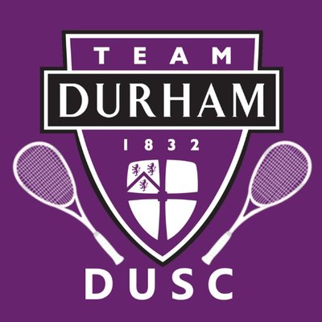

This is the obvious one, CompSci is my uni course and I've been interested in it since i can remember. I have a growing interest in computer science and love exploring how technology shapes our world. Learning how to code and understanding the principles behind software design and development has been exciting, as I’m fascinated by the problem-solving and creativity it involves. From front-end web development with HTML and CSS to diving deeper into algorithms and logic, I'm eager to continue building my skills and applying them to projects that make a meaningful impact.
In recent years, I have tried these sports:
The one I want to pursue in Durham is squash.
Check out this website for more info on squash at Durham.
| Position | A-Team | B-Team |
|---|---|---|
| 1 | Tom | Matt |
| 2 | Luke | Leo |
| 3 | John | (Hopefully me!) |